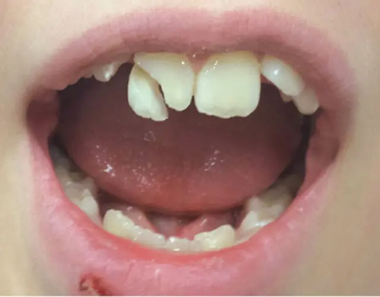
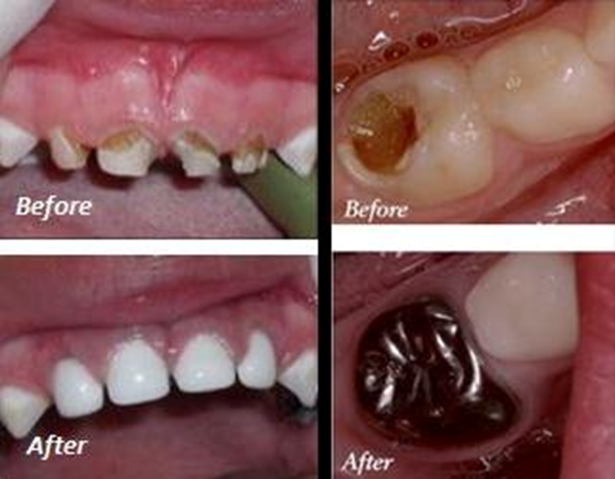

GENTLE CARE FOR LITTLE
SMILES
Kids Dentistry
Building a lifetime of healthy dental habits in a fun, fear-free, and friendly environment.

A POSITIVE EXPERIENCE
kids Dentistry
kids Dentistry
Healthy Teeth
Kids dentistry (also called paediatric dentistry) is the branch of dentistry that focuses on oral health of children from birth to teenage years.
- Growth & development of teeth
- Behaviour management
- Prevention of future dental problems
- Parent education
OUR SPECIALIZED SERVICES
Services Provided
PREVENTIVE EXCELLENCE
Why choose
Why choose
V
Cure Dental
- V Cure Dental & Implant Centre ensures kids get comfortable and painless dental treatment.
- We rigorously adhere to dental guidelines in terms of tools and treatment processes.
- We want you to have the most comfortable experience possible, whether before, during and after a dental treatment.
- We take good care and adhere to global standards for patient care.

Your Child's First Smile Visit
Make their first dental experience a happy memory. Book a friendly consultation today.